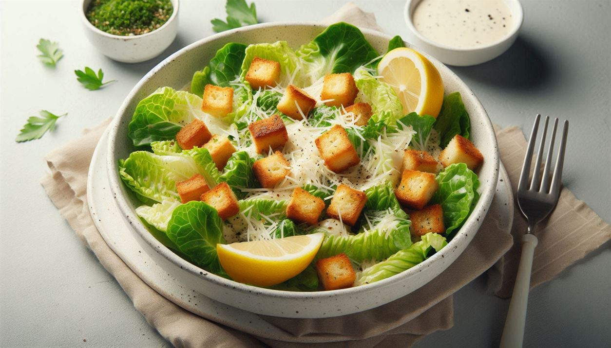

Classic Caesar Salad
Ingredients:
- 1 head romaine lettuce, chopped
- 1/2 cup Caesar dressing
- 1/4 cup grated Parmesan cheese
- 1 cup croutons
Directions:
- In a large bowl, combine chopped romaine lettuce and Caesar dressing. Toss until evenly coated.
- Sprinkle grated Parmesan cheese over the salad.
- Add croutons and toss gently.
- Serve immediately as a side dish or with grilled chicken for a complete meal.